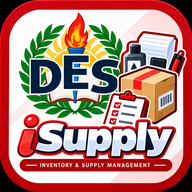

You're offline
The iSupply app shell is available, but inventory, request submission, approvals, restocking, and transaction history require an internet connection.
Loading iSupply…Connecting to the school inventory system

DES e-Inventory Hub · Supply Request Kiosk
The iSupply app shell is available, but inventory, request submission, approvals, restocking, and transaction history require an internet connection.